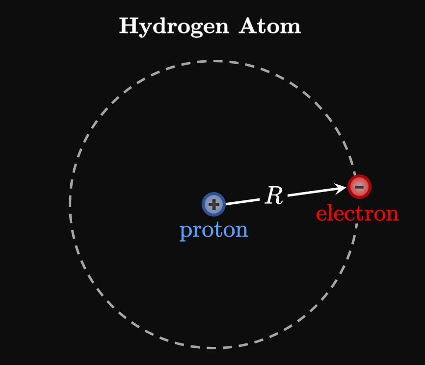
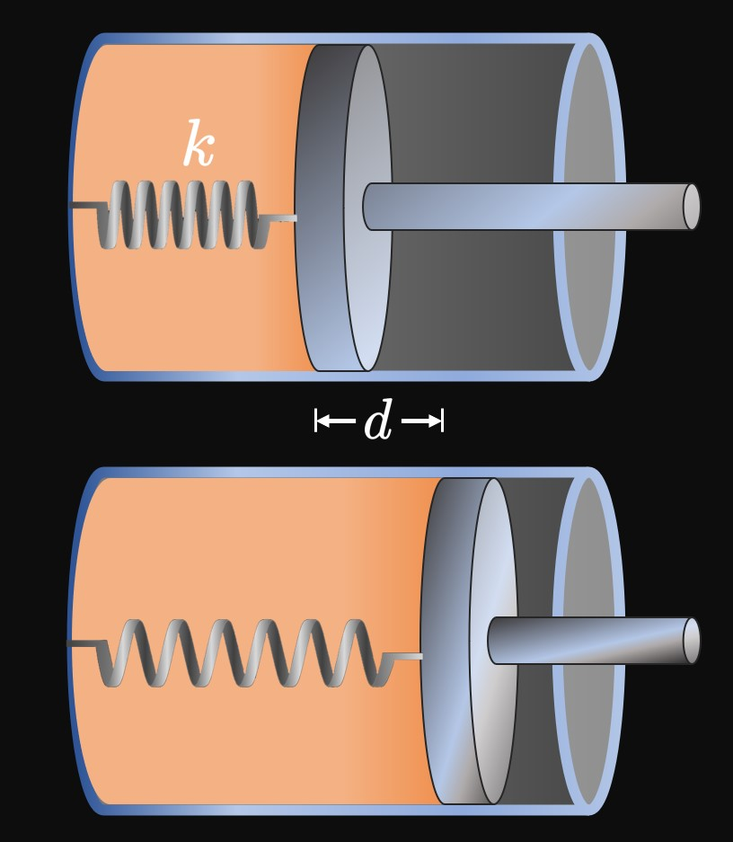

An object moves along the \(x\)-axis due to the force function
\[F(x) = 4x^3 + 2x + 1 \cma\]
where \(F\) is measured in newtons and \(x\) is measured in meters.
How much work is done to move the object from the origin to \(x = 1 \ques\)
The force that a particle experiences as it travels along the \(x\)-axis is given by
\[F(x) = 2 \cos \frac{\pi x}{4} \cma\]
where \(F\) is measured in pounds and \(x\) is measured in feet.
When an object moves from the origin to \(x = 2,\)
how much work is done by the force?
Along the \(x\)-axis, there exists a variable force
\[F(x) = 3x - 2 \cma\]
where \(F\) is measured in newtons and \(x\) is measured in meters.
The positive direction is to the right.
A \(10 \un{kg}\) object is placed at \(x = -1.\)
In what direction does the object move initially?
Find the object's initial acceleration.
Calculate the work needed to move the object to \(x = 3.\)
A force of \(50\) newtons allows a spring to be stretched by \(25\) centimeters past its natural length.
How much work is required to stretch the spring from its natural length
to \(30\) centimeters past its natural length?
A pull of \(100\) pounds stretches a spring by \(2\) feet past its natural length.
How much work must be done to extend the spring from \(2\) feet past its natural length
to \(4\) feet past its natural length?
A sample of gas in a container is sealed by a piston.
Its initial volume and pressure are \(4\) cubic feet and \(80\)
pounds per square inch, respectively.
After the gas is heated, its volume expands to \(6\) cubic feet.
Calculate the work done by the gas.
In a tank, a mixed sample of gases is sealed above by a movable lid.
The sample initially has a volume of \(10\) cubic meters
and a pressure of \(30\) newtons per square meter.
As the gases react, the volume increases to \(25\) cubic meters.
Calculate the work done by the sample of gas as it pushes up the lid.
For each of exercises 15–18, calculate the work needed to pump all the water to the top;
water's density is \(1000 \undiv{kg}{m}^3\) \(= 62.5 \undiv{lb}{ft}^3\).
Positive and negative charges attract each other,
whereas charges with the same sign repel each other.
Coulomb's Law states that the electrostatic force
between two charged particles of charges \(q_1\) and \(q_2\) (measured in coulombs, \(\text C\))
separated by a distance \(r\)
is given by
\[F = \frac{k \abs{q_1 q_2}}{r^2} \cma\]
where \(k = 9.0 \times 10^9\) \(\un{N m}^2/\un{C}^2.\)
Figure 5
shows an arrangement of two charges fixed along the positive \(x\)-axis.
(Note: \(1 \muUnit C\) \(= 1 \times 10^{-6} \un C.\))
Calculate the work done by the electrostatic force to

In the Rutherford–Bohr model for the hydrogen atom, an electron undergoes a circular orbit of radius \(R\)
around a stationary proton (Figure 6).
When the hydrogen atom absorbs a photon, the atom's total energy increases
and the electron jumps to a higher energy level,
meaning its orbit increases in radius.
Using Coulomb's Law in terms of \(R,\)
calculate the energy needed to move the electron farther out to an orbit of radius \(2R.\)
(A proton has a charge of \(1.6 \times 10^{-19}\) \(\un C,\)
while an electron has a charge of \(-1.6 \times 10^{-19}\) \(\un C.\))
A cord weighs \(0.15\) pound and is \(0.5\) foot long.
Initially slack, it is pulled upward and fully extended vertically.
Calculate the work required to raise the cord up to its full length.
Work is done to stretch a spring by a distance of \(d\) past its natural length.
What multiple of this work is needed to stretch the spring from a distance of \(d\)
to a distance of \(2d\) past its natural length?
(Assume that \(d\) is not too large.)
A sample of gas is stored in a container and sealed by a piston.
Its initial pressure is \(P_0,\) and its initial volume is \(V_0.\)
As the gas's temperature increases, its volume doubles.
How much work does the gas do in pushing up the piston?
A container of gas with volume \(3\) cubic feet and pressure \(12\) pounds per square inch is sealed by a piston.
A spring whose stiffness is \(150\) pounds per foot is attached to both the container and the piston;
the spring is initially in equilibrium.
(See Figure 7.)
The gas is then heated, and its volume expands to \(5\) cubic feet.
Calculate the distance \(d\) the spring stretches.
